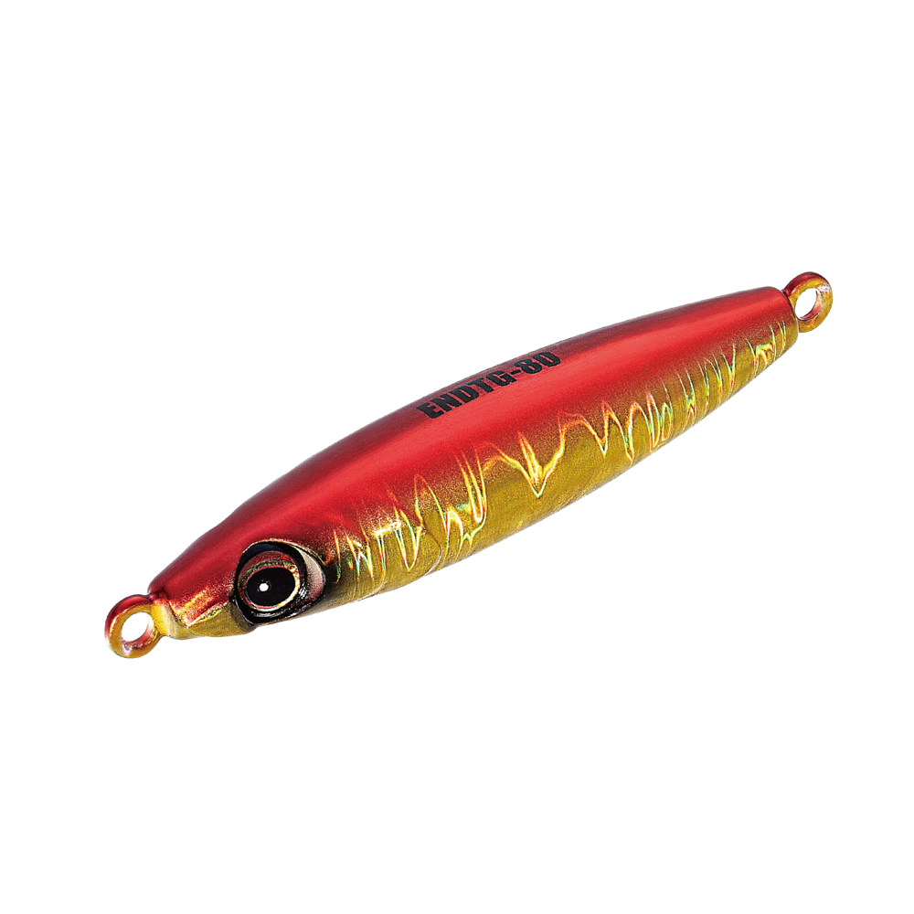
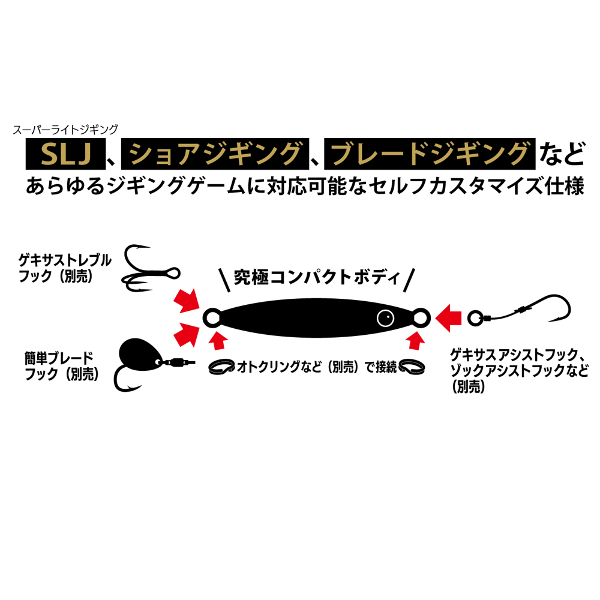
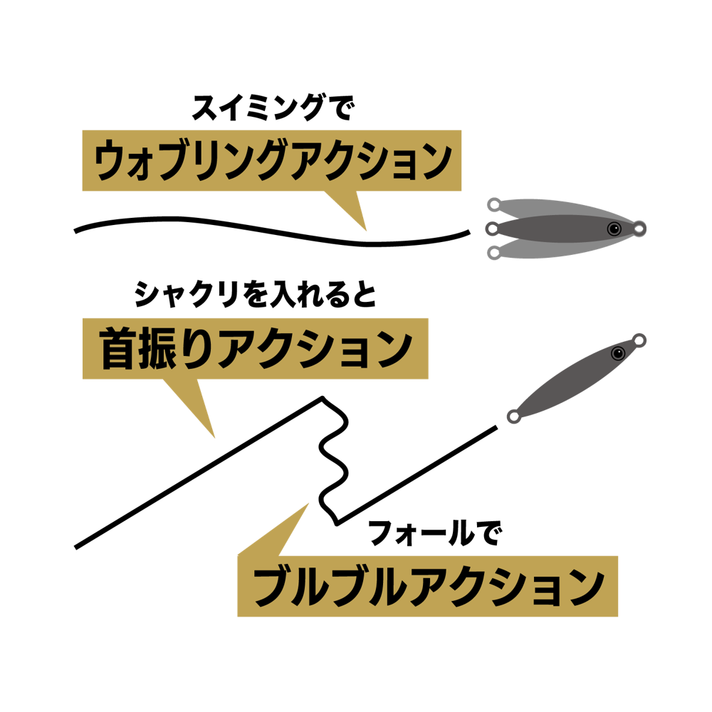
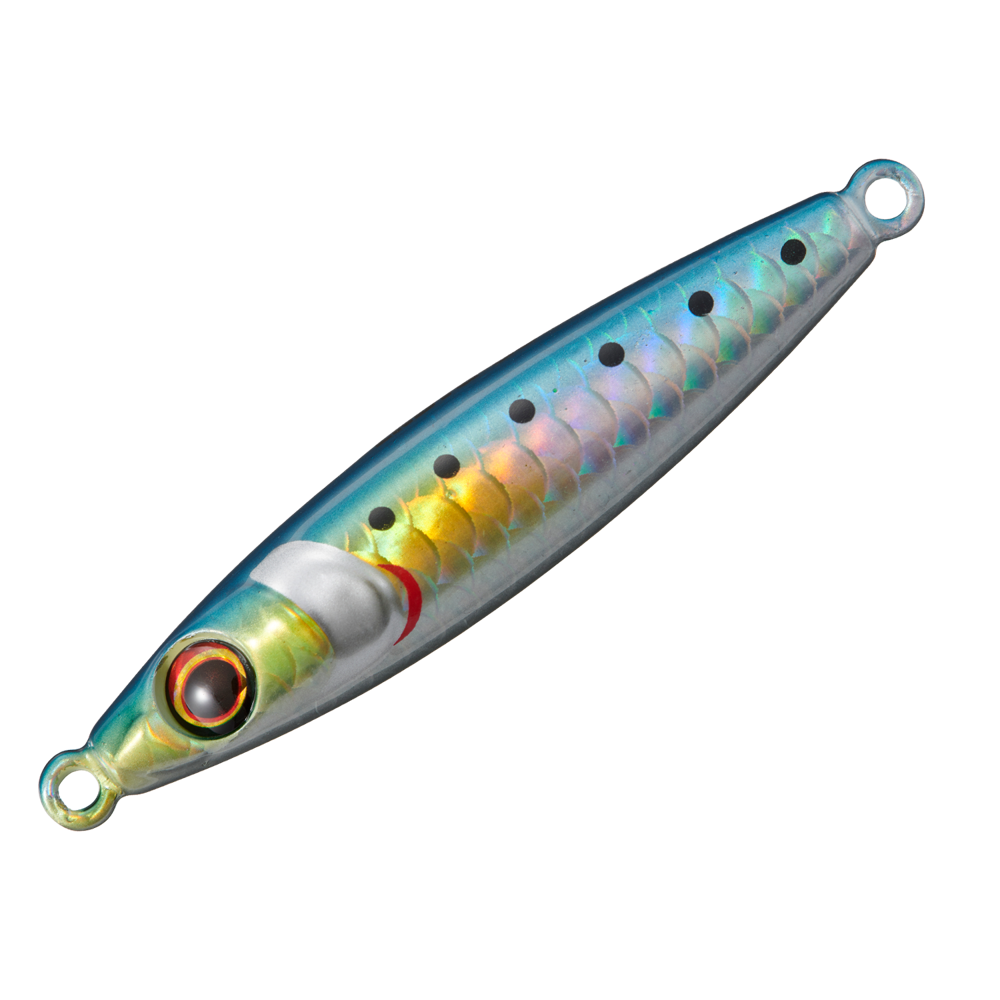
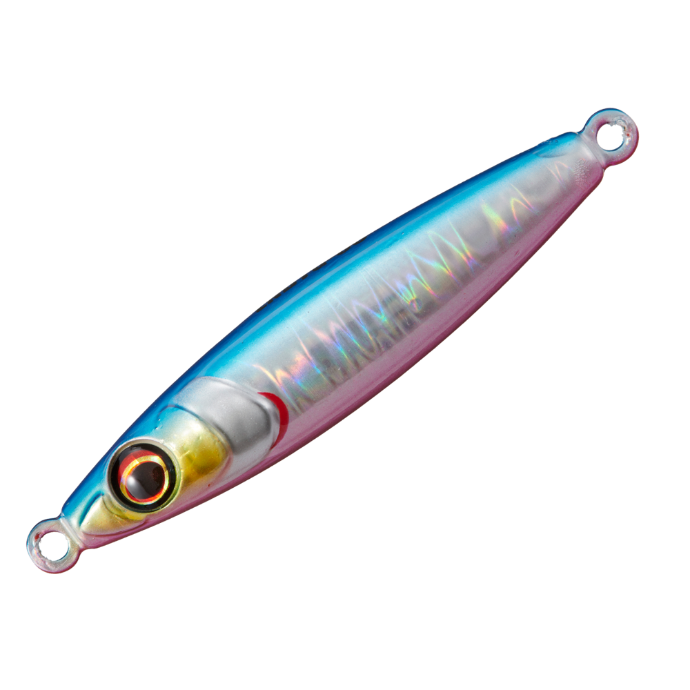
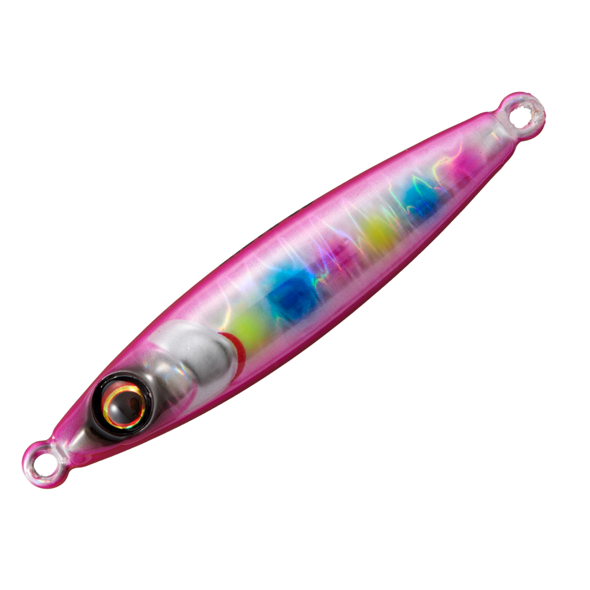
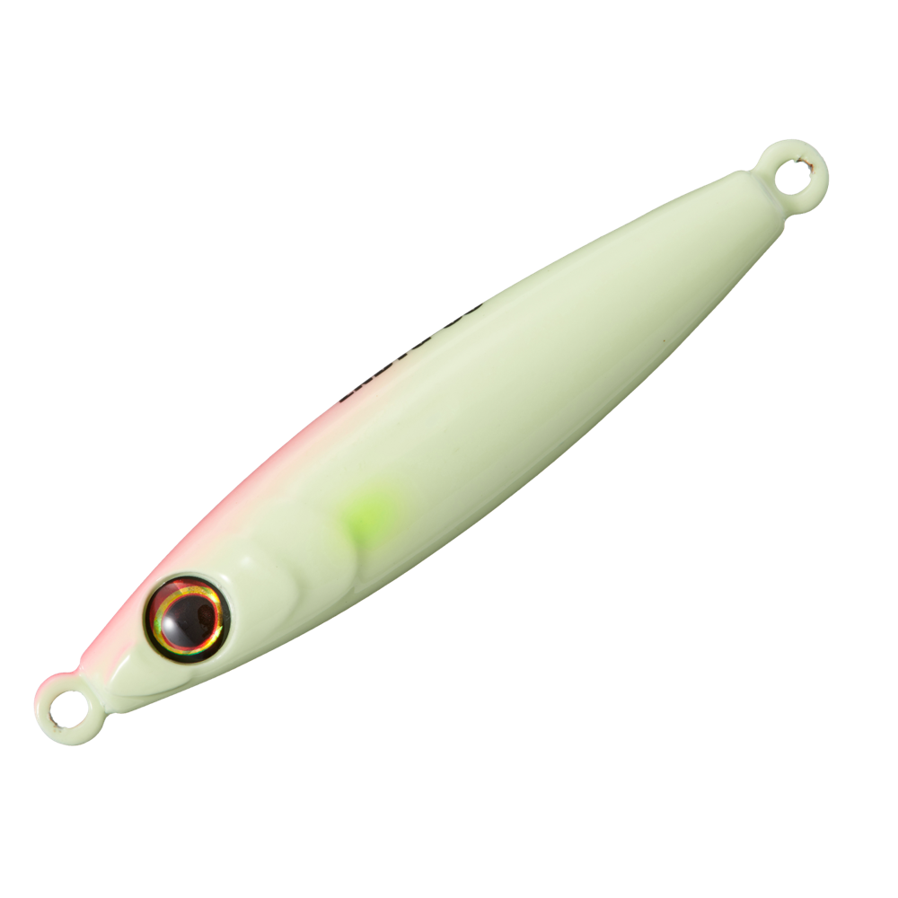
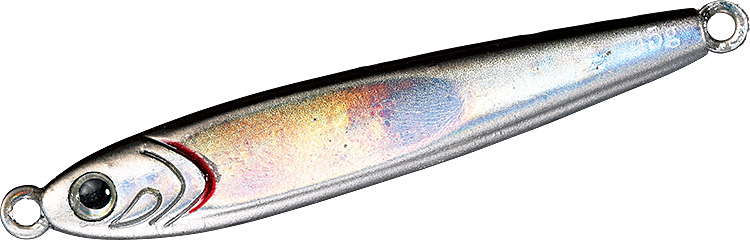

ジグパラ エンダーTG
ジグパラ エンダーTGは、メジャークラフトの人気メタルジグ「ジグパラ」シリーズのタングステンジグです。キャッチコピーは「タングステンジグ最終型」。
コンセプトは「徹底したコンパクトシルエット」。シンプルなデザインに少しリア寄りの重心で、フックの付け方を変えるだけで、SLJからショアジギング、ブレードジギングまで1本でこなせるのが最大の特徴です。

画像出典:メジャークラフト公式HP
スペック
- メーカー
- メジャークラフト（Major Craft）
- タイプ
- タングステンジグ（やや後方重心）
- 重さ
- 40g・60g・80g・100g
- フック
- 別売（セルフカスタマイズ仕様）
- カラー
- 全6色
- ターゲット
- 青物・サワラ・根魚など
- 価格
- 2,200円〜4,180円（税込）
- 発売
- 2025年7月
▼今すぐチェック

ジグパラ エンダーTGの特徴
無限の可能性を秘めたTGジグ
-
徹底したコンパクトシルエット
比重の大きいタングステンで、同じ重さの鉛のジグより小さく作れる。小さなベイトを食べている魚にも合わせやすく、潮の抵抗を受けにくいので沈みも速い。
-
1本で3つのアクション
ただ巻きのスイミングではウォブリング、シャクリを入れると首振り、フォールではブルブルと震えるアクションを出す。ロングフォールでは水平に近い姿勢で落ちていく。
-
フックで釣り方を選べるセルフカスタマイズ
フックは別売りで、フロントにアシストフックを付ければSLJやライトジギング、ショアジギングに、リアにブレードフックを付ければサワラや青物のブレードジギングに使える。
ジグパラ エンダーTGの使い方
フロントにアシストフックを付けた場合は、ワンピッチで首を振らせ、ロングフォールで水平に落としてフォール中のバイトを取るのが基本です。根魚狙いのロングフォールにも向いています。
リアにブレードフックを付けた場合は、ただ巻きや速巻きで使います。高速で巻いてもボディのバランスが崩れにくいので、ブレードのアピールをしっかり生かせます。


画像出典:メジャークラフト公式HP
ジグパラ エンダーTGの得意な状況
ベイトが小さい時や、潮が速くて普通のジグでは底が取りにくい時に出番です。
シルエットが小さく、沈みが速いので、渋い状況でも口を使わせやすいのが強み。メーカーも「厳しい時の最終ルアーとして試して欲しい」としていて、ほかのジグで反応がない時に投げると釣れる1本です。
ワンポイント
同じ重さでもシルエットが小さいぶん、鉛のジグより速く沈みます。いつもの鉛ジグより一段軽いウェイトを選ぶと、同じ水深・潮で底を取りつつ、より小さなシルエットで見せられます。
重さの使い分け
| 重さ | 価格（税込） | 使い分けの目安 |
|---|---|---|
| 40g | 2,200円 | 浅い場所のSLJや、ショアからのライトなジギング・ブレードジギングに |
| 60g | 2,860円 | ショアジギングの基本の重さ。ショアからのサワラ・青物のブレードジギングにも |
| 80g | 3,520円 | 深めの場所や潮の速い場所のオフショア、遠投が必要なショアジギングに |
| 100g | 4,180円 | オフショアの深場や、潮が速く底が取りにくい時に |
価格はメジャークラフト公式HPの記載より（本体価格は40g 2,000円・60g 2,600円・80g 3,200円・100g 3,800円）。使い分けの目安は、水深や潮の速さで変わります。
人気カラー
ジグパラ エンダーTGの人気カラーを紹介します。

イワシ（ケイムラ）イワシそのもののリアルなカラーに、紫外線で光るケイムラ。ベイトがイワシの時に。

ブルーピンク（ケイムラ）青い背にピンクのお腹。青物の定番カラーで、迷った時の1本目に。

ピンクキャンディ（ケイムラ）ピンクのボディにカラフルなドット。濁りや朝夕のアピールに。

ピンクグロー光を蓄えて光るグロー。深場や暗い時間帯、濁り潮で存在感を出したい時に。
画像出典:メジャークラフト公式HP
▼今すぐチェック
ジグパラ エンダーTGに似ているルアー
-
 ジグパラショート
メジャークラフト
詳細はこちら＞
ジグパラショート
メジャークラフト
詳細はこちら＞
同じジグパラの定番ショアジギングジグ。手ごろな鉛ジグを数をそろえるなら。
-

TGベイト ダイワ 詳細はこちら＞タングステンジグの定番。シルエットの小さなTGジグを比べるなら。
-
 ジグパラ ハイスピン
メジャークラフト
詳細はこちら＞
ジグパラ ハイスピン
メジャークラフト
詳細はこちら＞
ブレード付きのスピンテールジグ。最初からブレードで巻くなら。